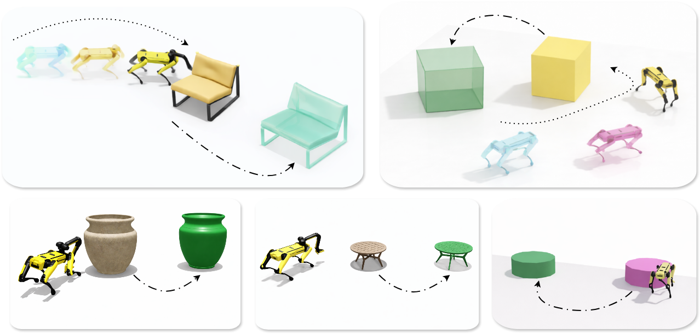
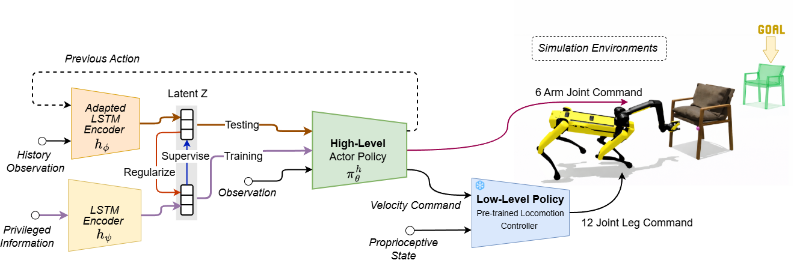
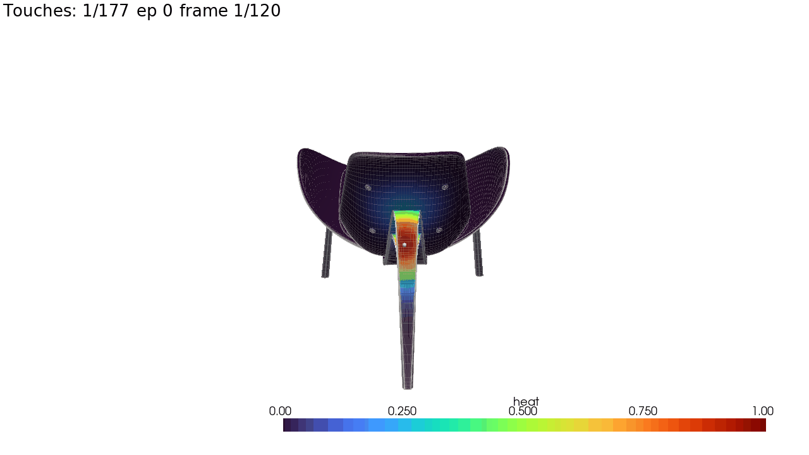
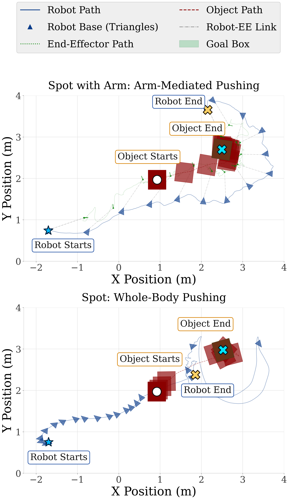

Project Overview
A legged robot pushes large, unfamiliar objects by using interaction history to reason about hidden contact and object properties.

Robots often need to move furniture, carts, boxes, and other large objects that are difficult to grasp. This project focuses on non-prehensile manipulation: using controlled contact from a legged robot's body and arm to push objects toward a goal.
The core research direction is to move from policies that rely on privileged simulator state to policies that infer a useful belief from deployable signals such as vision, proprioception, action history, and contact cues.

The high-level policy selects base and arm commands for pushing. A locomotion controller handles stable base motion. The belief module summarizes recent interaction so the policy can respond to object motion, contact quality, friction, mass, and slip.
The heatmap is generated from contact between the robot and the object.

Whole-body pushing rollouts from the quadruped pushing project.
Behavior changes as training checkpoints improve the learned pushing policy.

Initial real-world trials show Spot pushing a chair toward the goal pose.